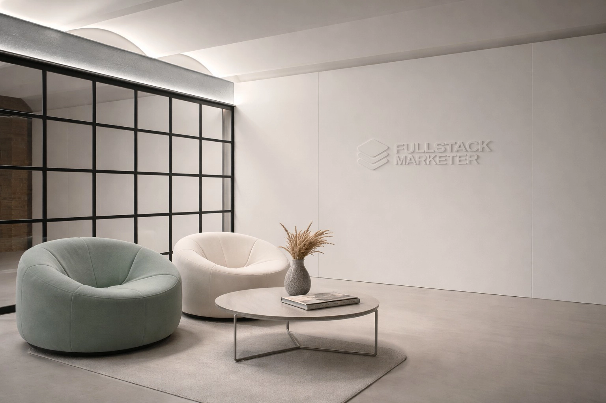
ÖNORM B 8115-3
Zertifizierte Planung
Präzise raumakustische Planung und schalltechnische Gutachten für Gebäude, die genauso gut klingen, wie sie aussehen.

Seit 2018 begleiten wir Projekte von der ersten Idee bis zur messbaren Umsetzung. Beratung, Messung, Planung und Ausführung — alles aus einer Hand, immer normgerecht nach ÖNORM, DIN und ISO.
Unsere Kunden sind Architekten, Planer, Bauträger und Industriebetriebe, die Akustik nicht dem Zufall überlassen wollen.
Von der ersten Messung bis zur finalen Abnahme begleiten wir Ihr Projekt mit modernster Technologie und jahrelanger Erfahrung.
Optimierung von Nachhallzeiten und Sprachverständlichkeit in Büros, Schulen, Konzert- und Theatersälen.
Planung und Nachweis von Tritt- und Luftschallschutz gemäß aktueller Normen. Wir sorgen für die ruhige Basis in jedem Gebäude.
Lärmkartierung, Prognosen und Gutachten für sensible Wohn- und Gewerbebereiche zum Schutz vor Außenlärm.
Raumakustische Optimierung von Aufenthalts- und Schulungsräumen — Nachhallzeit um 58 % reduziert.
Case Study lesen arrow_forward
Gastronomieakustik im 1. Bezirk — RT60 um bis zu 36 % gesenkt, unsichtbar integriert.
Case Study lesen arrow_forward
Bauakustik und Raumakustik im Headquarter eines der führenden Schließsystemhersteller Europas.
Case Study lesen arrow_forwardToningenieur & Co-Founder
Toningenieur mit Fokus auf Raumakustik, Messung und Simulation. Verantwortet die akustische Fachplanung und entwickelt Lyzer, das digitale Akustik-Tool von Coustiq — mit dem Anspruch, dass jede Planung durch Messung beweisbar ist.
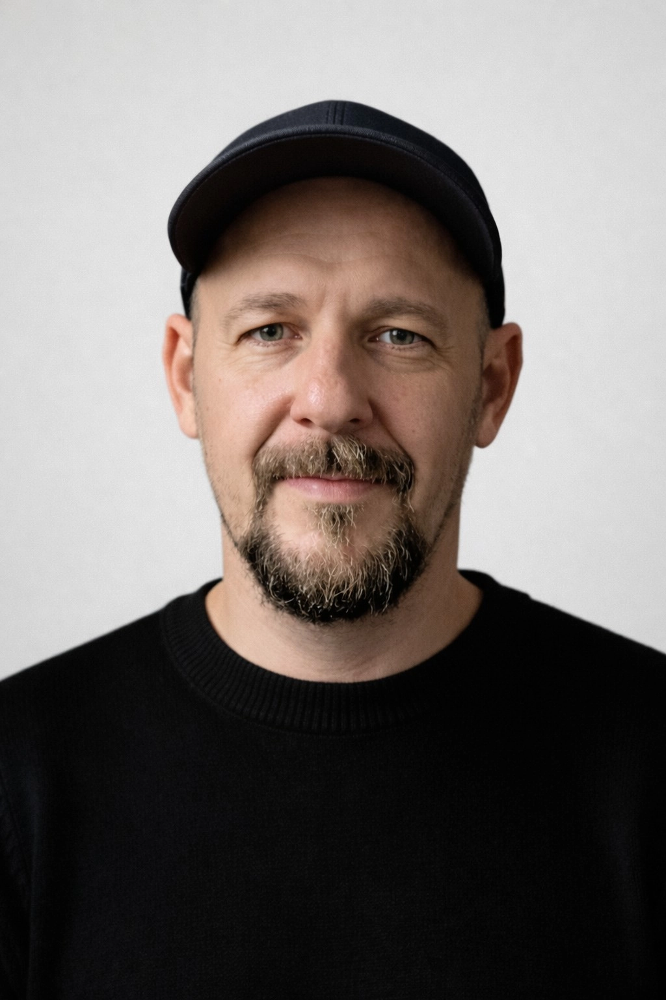
Co-Founder & CEO
Über 20 Jahre Erfahrung in Vertrieb und Projektsteuerung. Bringt Projekte von der ersten Anfrage bis zur Abnahmemessung verlässlich ins Ziel — und sorgt dafür, dass Akustiklösungen optisch genauso überzeugen wie akustisch.
Lyzer ist unser webbasierter Akustik-Rechner für Planer und Architekten. Nachhallzeiten, Schallpegel und Raumakustik-Kennwerte — direkt im Browser, ohne Installation.
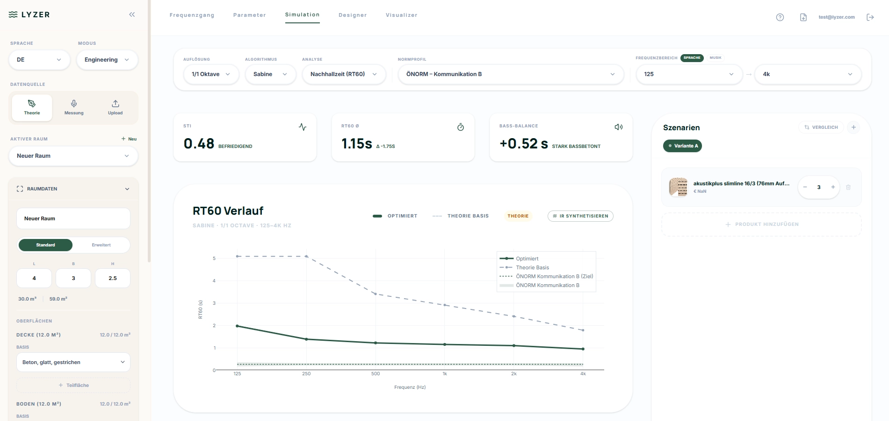
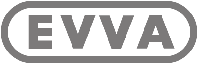
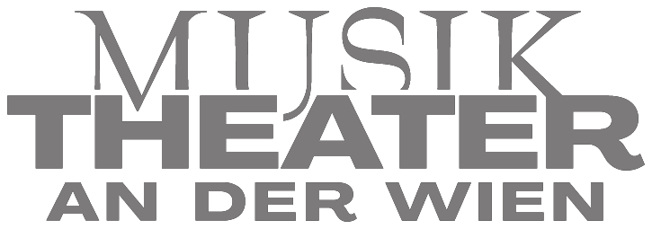
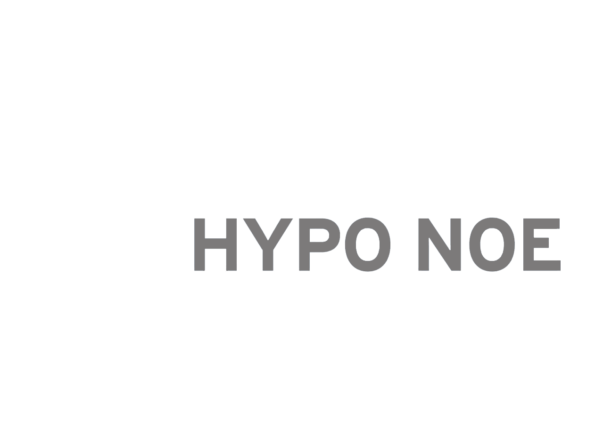
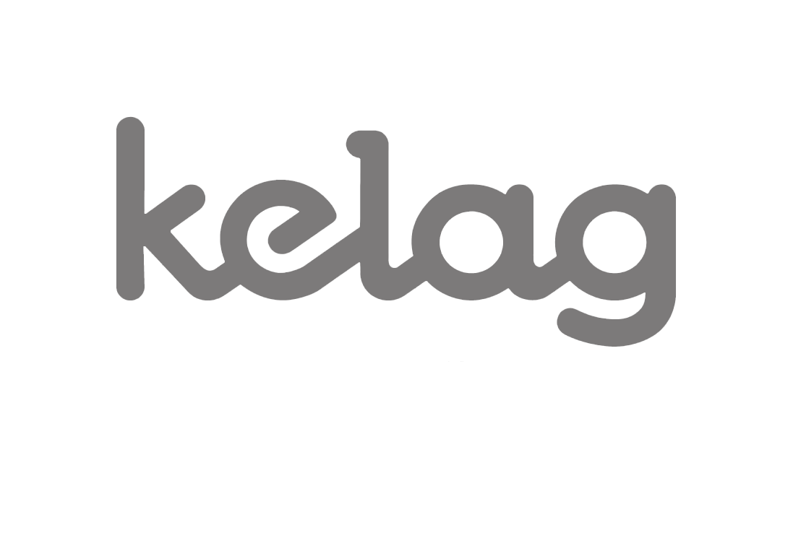
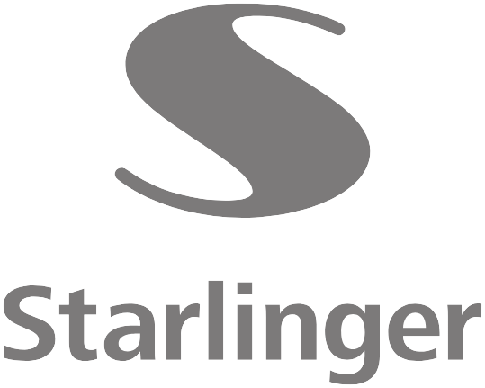
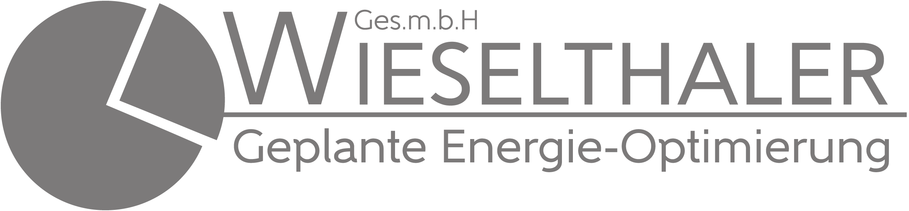
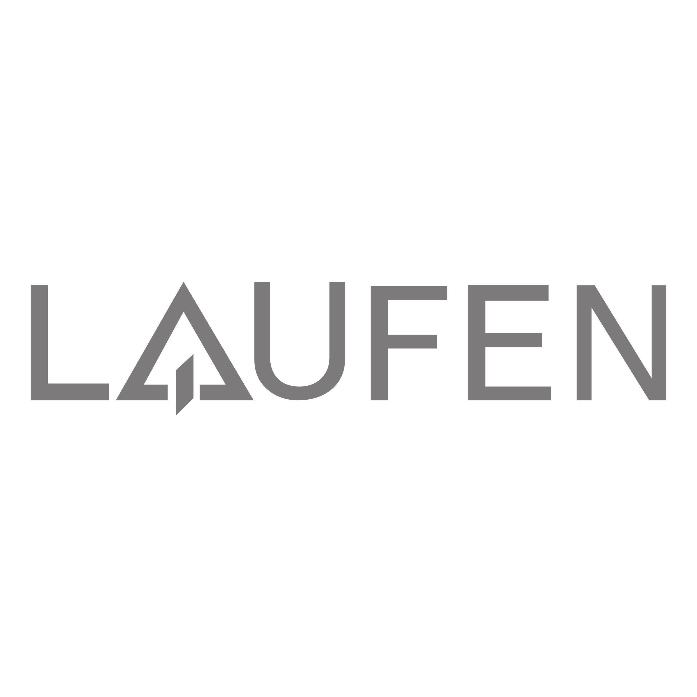
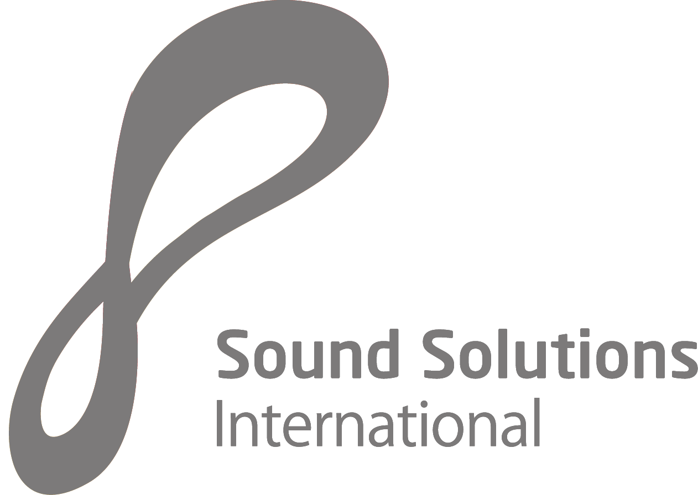
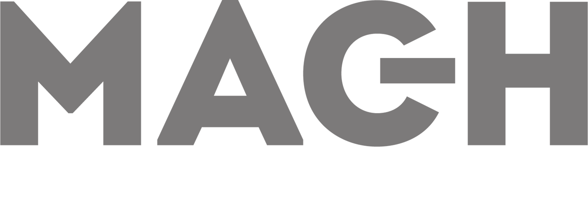
„Unsere Gäste haben die Akustik bemängelt — bei klarer Vorgabe, das Designkonzept nicht anzutasten. Coustiq hat das perfekt gelöst: dezente Deckenintegration, optisch unsichtbar und akustisch spürbar. Wir spielen wieder Musik, und Gespräche beim Essen sind wieder angenehm."
Gründer, C.O.P. Vienna
Lassen Sie uns über die akustischen Anforderungen Ihres Bauvorhabens sprechen. Wir beraten Sie unverbindlich und präzise.